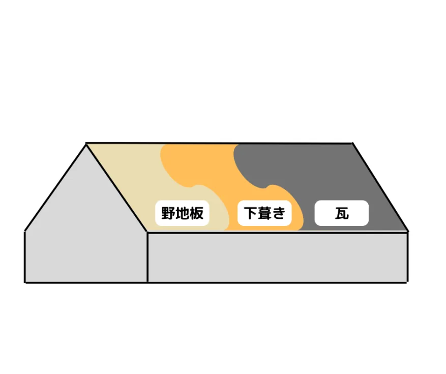
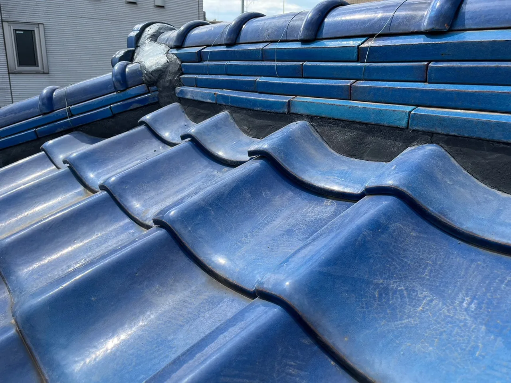

新築購入時や、リフォームの検討時に調べてみると色々な種類の屋根材があります。
瓦は、屋根材の中で歴史も深く現在でも主流な屋根材です。瓦屋根を選ぶ際に知っておくと良いポイントを紹介します。
- 目次
- 瓦屋根とは
- 瓦屋根の施工方法
- 瓦屋根のメリット
- 瓦屋根のデメリット
- 瓦屋根を長持ちさせるメンテナンス
- まとめ
瓦屋根とは
瓦屋根は粘土などの土を原材料とし、成型し焼き上げた瓦を利用した屋根のことです。
食器や壺などの焼き物と同様に成型後に手を加えず焼いたものを「素焼き瓦(無釉瓦)」、成型後に釉薬を塗って焼き上げたものを、「陶器瓦」と呼びます。釉薬はガラス質なので、表面にツヤを出したり着色したりとデザイン性に幅が生まれます。
また、瓦は形によって和瓦や洋瓦、平板瓦などに分類されます。和瓦は昔ながらの住宅に使用されていて、緩い波型形状をしています。洋瓦は和瓦より曲線がよりはっきりとしており、桟山と呼ばれる部分が半円形状に近いです。平板瓦は起伏の少ないすっきりとしたデザインでスレート屋根のように、すっきりとした屋根になります。
瓦屋根の施工方法
瓦屋根も他の屋根材同様に垂木に野地板を張り、下葺き材を葺きます。下葺き材は現在、防水シートが主流ですが、古い住宅は土葺きや杮葺きの場合もあります。下葺きできたら瓦を固定するための桟木を設置し瓦を葺いていきます。どの屋根材も端部や接合部には専用の役物を使用しますが、瓦屋根の特徴は「漆喰」を詰めることです。
瓦屋根は厚みがあり、起伏もあるので棟瓦との隙間を漆喰で埋めて防水をする必要があります。瓦は上に重なるよう葺いていくので最上段の瓦を固定する役割も漆喰は兼ね備えています。漆喰の主原料は消石灰(水酸化カルシウム)で空気中の二酸化炭素と結びつくことで石灰石(炭酸カルシウム)に変わっていきます。漆喰は施工時、細部を埋めやすいような硬さですが、施工後、日が経つにつれて固まっていきます。
瓦屋根の施工要領ガイドラインは年々改定されているのですが、その背景には強風時の落下事故が後を絶たないためです。
住宅自体の劣化や旧施工要領による落下事故も考えられますが、施工技術による事故も考えられます。事故を未然に防ぐためにも瓦屋根の施工について理解しましょう。


瓦屋根のメリット
瓦屋根の最大のメリットは耐久性です。瓦は粘土を高温焼成して製造するため熱に非常に強いです。また瓦を桟木に設置することで下葺きとの間に通気層が出来るので遮熱性が高いです。厚みがあるので遮音性にも優れています。釉薬を塗った陶器瓦は瓦の吸水を防ぐため、より瓦の耐久性が高いです。
古くから利用され現在も主流である瓦屋根は、その機能性が高い証明されていると言えます。
瓦と名前が付きますが、セメント瓦は原料も製造方法も異なる別物なのでこのメリットが当てはまらないので注意が必要です。
瓦屋根のデメリット
瓦は1枚当たりの働き面積が狭く、他の屋根材に比べて面積当たりの重量が最も重いです。重い屋根材をたくさん使うので屋根の総重量が重くなります。屋根の総重量はその分住宅の構造躯体に負荷がかかってしまいます。負荷がかかった構造躯体は劣化しやすく、耐震性が下がり倒壊リスクが上がります。もちろん耐用年数までは長く安心して住めるので、購入時のリスクとして捉えるほどではありません。何世代も前に建てた住宅が雨漏りした際は、再度瓦屋根を選択するより軽量の金属屋根などに葺き替えることをお勧めします。
また1枚当たりの働き面積が狭いので施工の手間が掛かります。建設業界として少子高齢化の影響で職人が減少している中、手間の掛かる瓦屋根の職人も減少傾向にあります。手間と職人の減少に伴い、瓦屋根の施工価格は上昇しています。そのためコスト削減の為に新築の建売住宅ではスレート屋根が多く利用され、リフォームの際は金属屋根が多く利用されています。
瓦屋根を長持ちさせるメンテナンス
他の屋根材に比べて、初期費用が掛かる瓦屋根ですが、耐久性が高く再塗装などのメンテナンスの必要がないので、維持費用はあまりかかりません。
屋根材の耐用年数に比べて、漆喰や下葺きの耐用年数が短いので雨漏りや漆喰の剥がれを発見した際は、施工業者に修理依頼をしましょう。
まとめ
日本の歴史的建造物で現存している建物は瓦屋根か金属屋根がほとんどです。実際に長持ちしている屋根材を選ぶことで雨漏りのリスクや、住宅の長持ちに繋がります。
しかし近年、歴史的建造物でも倒壊のリスクがあるとして取り壊しが行われています。地震の多い日本において瓦屋根が最適ではない。という声もあり、安価かつ軽量のスレート屋根も増えていますが、初期費用が抑えられるものの維持費用が掛かってしまいます。
トタン屋根に代表される金属屋根はガルバリウム鋼板の屋根の登場により、安価かつ軽量、耐久性の向上により維持費用も安価になりました。関東圏は建売住宅でスレート屋根がシェアを拡大していますが、東北や北陸の雪国は雪害のリスクを避ける為、機能性の高いガルバリウム鋼板の屋根がシェアを拡大しています。東日本大震災を経験した東北地方での金属屋根のシェア拡大は雪害と耐震の両方を兼ね備えた選択の結果です。
いつ来るかわからない災害への備え、今後その家に住む予定の家族の安心のため、しっかりと安心できる屋根にしませんか。